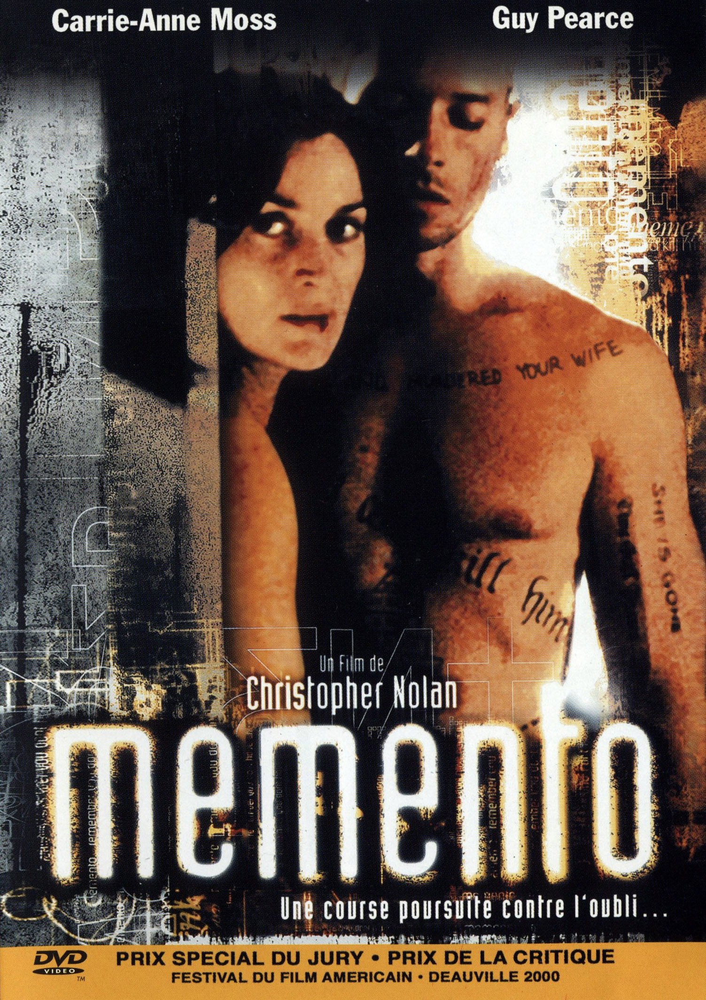
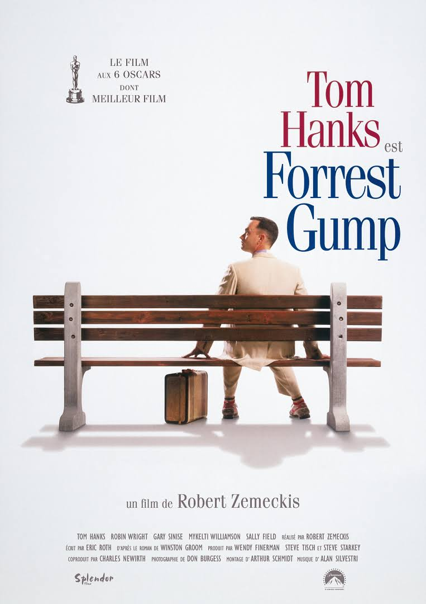
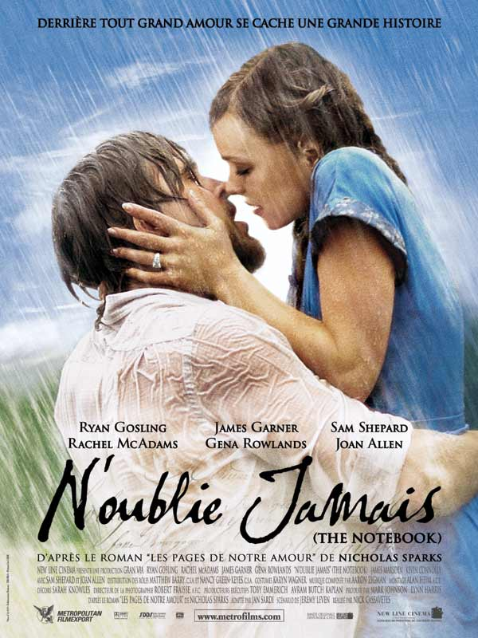

|  | MementoLeonard Shelby ne porte que des costumes de grands couturiers et ne se déplace qu'au volant de sa Jaguar. En revanche, il habite dans des motels miteux et règle ses notes avec d'épaisses liasses de billets.Leonard n'a qu'une idée en tête : traquer l'homme qui a violé et assassiné sa femme afin de se venger. Sa recherche du meurtrier est rendue plus difficile par le fait qu'il souffre d'une forme rare et incurable d'amnésie. Bien qu'il puisse se souvenir de détails de son passé, il est incapable de savoir ce qu'il a fait dans le quart d'heure précédent, où il se trouve, où il va et pourquoi.Pour ne jamais perdre son objectif de vue, il a structuré sa vie à l'aide de fiches, de notes, de photos, de tatouages sur le corps. C'est ce qui l'aide à garder contact avec sa mission, à retenir les informations et à garder une trace, une notion de l'espace et du temps. |
|  | Forrest GumpQuelques décennies d'histoire américaine, des années 1940 à la fin du XXème siècle, à travers le regard et l'étrange odyssée d'un homme simple et pur, Forrest Gump. |
|  | The NoteBookAtteinte de la maladie d'Alzheimer, Allie vit en maison de retraite. Chaque jour, Noah lui lit le même livre. Il s'agit du carnet où Allie a consigné sa propre histoire, lorsqu'elle a appris sa maladie. Pour ne pas oublier ses sentiments, elle a écrit, et Noah, inlassablement, lui relit ses propres mots. A travers eux, on la découvre dans les années trente, éperdument amoureuse d'un jeune homme, Noah, que sa mère fera tout pour éloigner d'elle, sa situation n'étant pas jugée assez bonne. Après des années de séparation, à la fin de la Seconde Guerre mondiale, Allie s'apprête à épouser un avocat. Lorsque, par le journal, elle apprend le retour de Noah, l'envie lui prend de le revoir. Echappant à une vie de convenance, les deux jeunes gens se retrouvent et découvrent que leur amour est resté intact. Ils passeront le reste de leur vie ensemble, jusqu'à ce que la mémoire les sépare. |